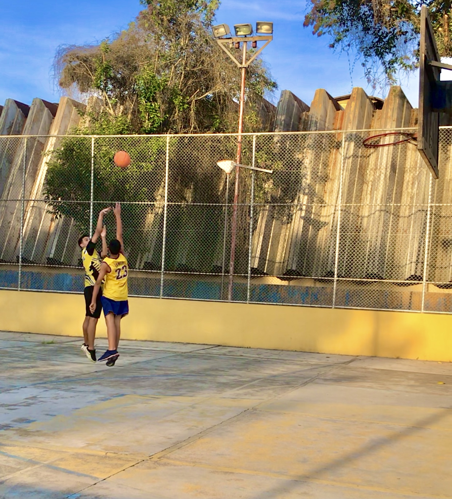

Aos 11 anos, almejei ingressar no time de futebol da escola, mas a sorte não sorriu para mim naquele momento. Acabei no time de vôlei, mas não sentia a paixão que esperava. Foi quando o professor, percebendo minha insatisfação, sugeriu que eu experimentasse o basquete. Com uma mistura de dúvida e curiosidade, decidi arriscar. E, ao pisar na quadra, algo mágico aconteceu. Aquele ambiente repleto de energia e movimento, o som da bola quicando, a emoção transbordando em cada jogada... Fui cativado. No basquete, encontrei um esporte que me fez sentir vivo, que despertou uma paixão profunda em meu coração. Desde então, cada treino, cada cesta, cada jogo se tornaram uma jornada emocional, uma conexão comigo mesmo e com o esporte que me proporcionava liberdade e expressão. O basquete se tornou parte da minha história, um elo eterno com momentos de superação, amizade e uma paixão que transcende as linhas da quadra.
Amor a primeira vista...

O basquete se tornou a essência da minha vida. Mesmo quando não estou jogando com frequência, ele está presente em cada fibra do meu ser. É uma paixão que transcende os limites das quadras e se entrelaça em todas as facetas da minha existência. Desde o dia em que ganhei meu primeiro campeonato e senti a adrenalina correr em minhas veias, sou completamente apaixonado por esse esporte. A cada arremesso, cada movimento, sinto uma conexão profunda e uma sensação de plenitude. O basquete não é apenas um jogo, é uma parte inseparável de mim, alimentando minha alma com emoção, determinação e um amor inabalável. Não importa o que aconteça, eu sempre encontrarei o basquete em cada batida do meu coração.
Minha trajetória no basquete foi repleta de momentos memoráveis. Participei de inúmeros campeonatos, nos quais fui abençoado com vitórias na maioria deles. Essas conquistas se tornaram tesouros preciosos em minha memória, lembranças que irei guardar para sempre. No auge do esporte, experimentei uma intensidade e uma vivacidade que transcendiam o comum, sentindo-me verdadeiramente vivo e realizado. Mesmo que minha participação atual seja menos frequente, sempre que tenho a oportunidade, jogo com meus amigos, relembrando aqueles dias gloriosos e mantendo viva a chama da paixão pelo basquete. Essas experiências marcantes moldaram minha jornada, nutrindo meu espírito e deixando um legado de amor e dedicação ao esporte que sempre terei em meu coração.